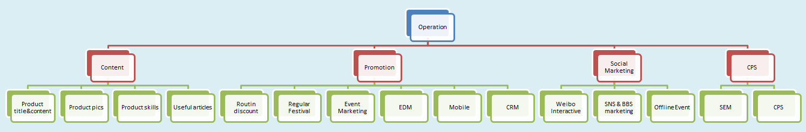
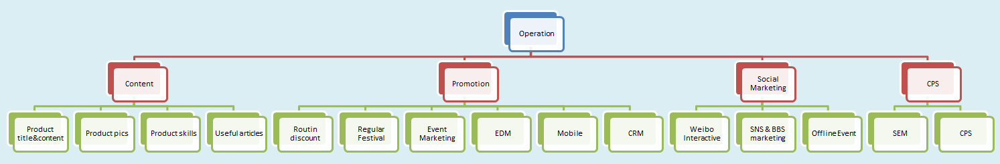
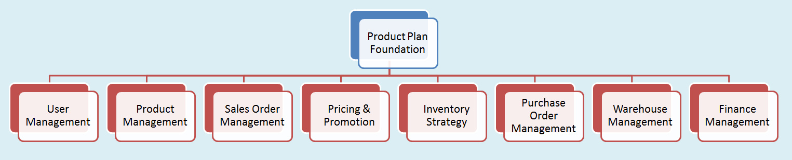
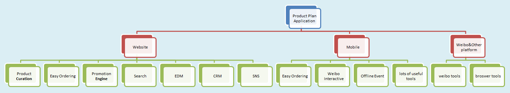
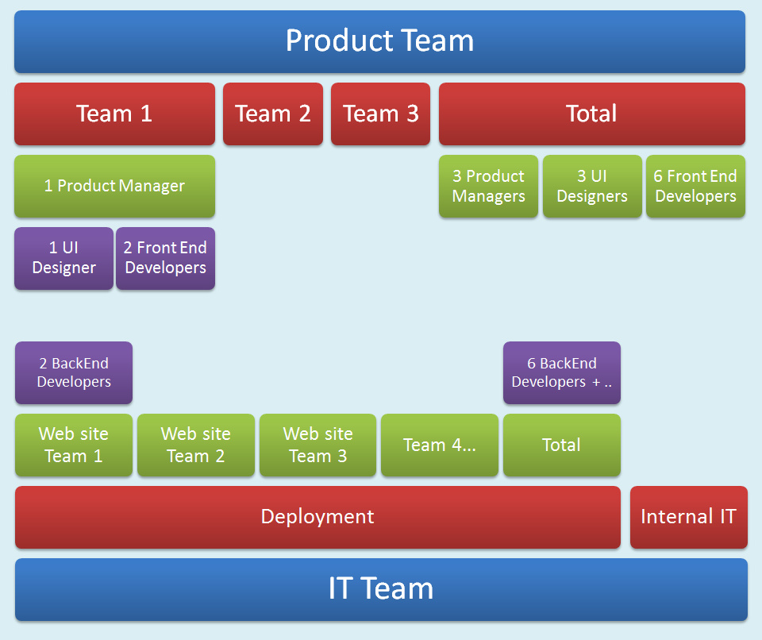
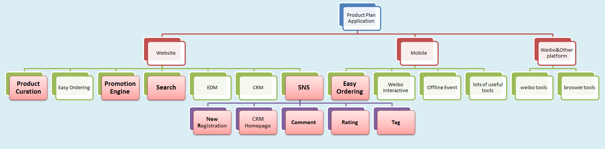
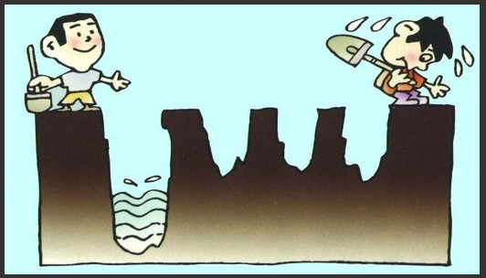

Operation Plan

People organization


在现实世界的商店最有力的武器就是地段，地段，地段；而对于网上经营来说最重要的是技术，技术，技术。
亚马逊掌门人杰夫·贝佐斯 Amazon CEO: Jeff Bezos




<< Need Person : "27"
Total Cost : "27 * 6000RMB * 12Month = 1,944,000" >><< Need Person : "12"
Total Cost : "12 * 8000RMB * 12Month = 1,152,000" >>Note: With Chinese persol tax, almost need double salary costBecause it is better to lose money than to lose time and focus
中小企业做预算，如果money不够，就集中力量办大事吧。将资源集中在1-2个媒体，好好深挖定能见水。切忌贪大求全，每个媒体铺一点最后什么都没获得。

#